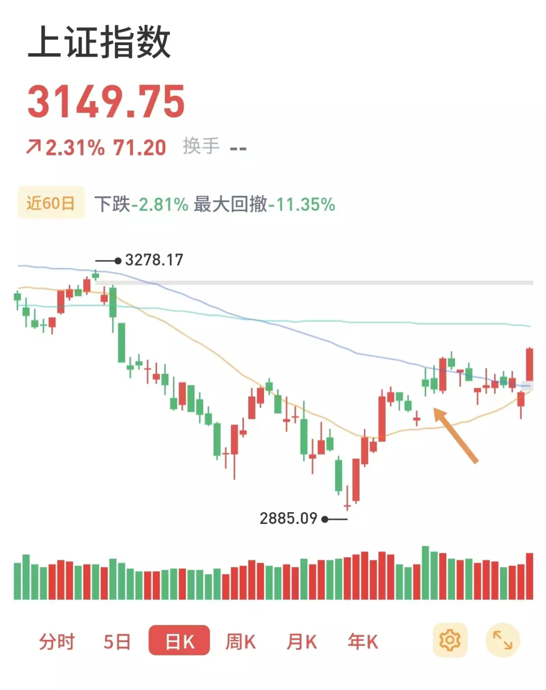

涨得妈都不认识
原创 V姐万事屋 V姐来了 2022-11-30 07:04 发表于上海
原文链接(长) 原文链接(短)
Hi, 我是V姐。
昨天的市场被周一的政策带飞了。
叫停多年的房企股权融资，又重新上岗了。
地产开发板块大涨8%，万科，中交地产等40只房地产股涨停。
银行保险白酒旅游全部大涨。
俗话说，一根阳线改三观。

老实说，一根不太够，咱们都是被A股毒打多年的老人了，前面这个缺口还没有补上，要么本周再来一根这种阳线，要么下周大概率要回踩。
所以没有上车的朋友不要急，我们这个市场吧，赚不赚钱不敢说，所谓捡便宜的机会，那从来不缺。
原本很多朋友以为金融16条是救市的高峰，老实说，我感觉那才是实质性救市的开始。
最利好的，还是本来就优质的房企，比如万科、保利，金地、龙湖、招商、中海、华润。
还有像旭辉，碧桂园这些垂死边缘惊坐起的，能续一口命。
蓝光，恒大这些坟头草都长好高了，不可能救活的，项目交出来，企业叉去火葬场。
后面除了4个一线城市，其他城市都没啥好限购的了，藏着掖着干嘛呢，不要等到彻底凉了再来喂参汤。
一堆强二线城市，拿着滞销房子抵工程款，这不扯呢嘛，人家总不能拿房子给农民工结款撒。
还有就是房企虽然要救一救，不然买房人太惨。但是普通人也不容易，大家现在没信心接盘，也没胆子消费。
银行要是后面持续大涨合适吗？为啥不能让点利出来，存量房贷降一降呢？
这么多的房奴打工人，一个月能少还几百，也能多去外面吃几顿，拉动消费就是靠钱呀，没钱说个毛线。
保房企交房本来就是应该的，老百姓6个钱包上车的房子，收房不应该感恩戴德。
降一降存量利率，给更广大人群哪怕一点甜头，才是给人民雪中送炭了。
另外，下午的发布会，信息量也挺大的。
1、上来就是要加强80岁以上老年人接种。
2、官方首次开口定调奥密克戎毒性低，重症率低。
3、加强定点医院建设，没提之前的加强方舱建设。
4、没有提动态清零方针。
会议结束，恒生指数大涨，基本说明是个啥意思了。
现在吵路线已经没有意义了，硬着陆没有回头路。
普通人应该密切关注北京和广州的第一波峰值冲击到底是到什么程度。我在网上看到，以及社群确认的石家庄医疗现状不乐观，也欢迎当地读者朋友给我留言，分享一下更具体的情况。
下午上海黄浦区发了个通知，要求各单位按照60天去准备防疫物资，直接导致叮咚的运力被抢光。
社区开始汇总特殊医疗需求的居民，学校开始推动绑定家庭医生，都是为迫在眉睫地分级医疗做准备。
后面几个月呢，三甲医院不是想进就进的。
要有心理准备，请医生朋友帮忙买一些抗生素备着，冬天小毛病高发，一般炎症就在家抗一抗。
跑跑步打打球吧，一边锻炼身体，一边还能对抗焦虑。